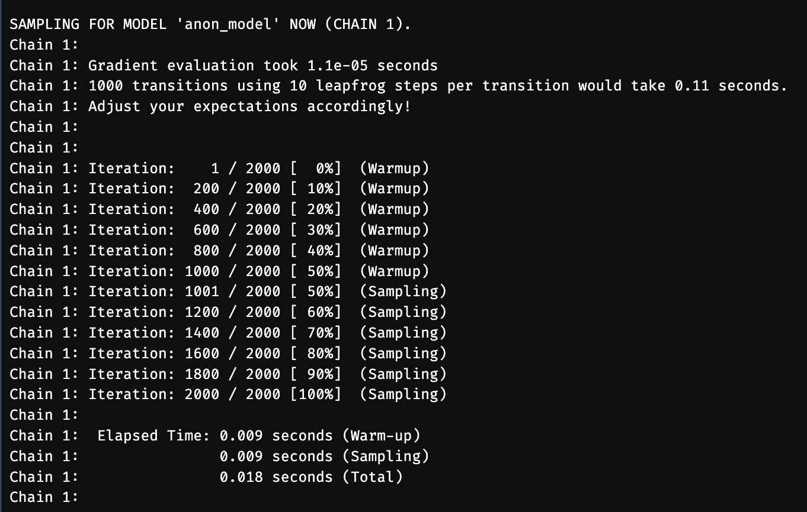

remove.packages("rstan")
if (file.exists(".RData")) file.remove(".RData")Appendix D — Installing Bayesian Software
For Bayesian modelling, we will use the R-package brms. This is an interface to the Stan statistical programming language which you can use in R. Rather than learn another language, brms allows you to specify models in R using a highly-readable and concise formula syntax. brms then takes your model and compiles it into Stan code (which is built on C++). For brms to work, you will need to ensure that your computer can compile C++ code. You will only need to go through this process once on any given computer.
Please follow the instructions below depending upon whether you are a Mac, Windows, or Linux user.
D.1 Mac
D.1.1 Configure the C++ Toolchain
If you have previously used R on your Mac, you may have the files ~/.R/Makevars and/or ~/.Renviron. If you have any important settings in here that you’ve defined personally, make a backup of these files in another location. Then, delete the originals. If you can’t find these files on your system, go to Finder, click on Home (i.e. the icon with the house), and type Shift + CMD + . to show the hidden files on your system. After completing the installation instructions you can go back to the new Makevars file in this location and add back in any settings you previously had.
There are two steps to configuring the C++ toolchain on Mac:
Installing the Xcode Command Line Tools
Installing
gfortran.
First, install the Xcode Command Line Tools by opening the terminal (use the spotlight search and type Terminal). In the terminal type the following and then press Enter:
xcode-select --install.
Installing the Xcode Command Line Tools may take a while. Once done install gfortran. The version you install will differ whether you have a Mac with Apple or Intel chips.
Install the latest version of gfortran for your operating system at https://github.com/fxcoudert/gfortran-for-macOS/releases.
Check your macOS by clicking the Apple logo in the dock and selecting About this Mac. On the releases page, select the appropriate release for your operating system. Please install the latest version of gfortran for your system. Specific instructions for Apple Silicon and Intel Silicon Macs are provided below.
D.1.1.1 Macs with Apple Silicon (i.e. M1 or M2 chips)
At the time of writing for up to date Macs with Apple Silicon this is gfortran 12.2 for Ventura (macOS 13). Click gfortran-ARM-12.2-Ventura.dmg to download the software and install this on your system.
D.1.1.2 Macs with Intel Silicon
At the time of writing for up to date Macs with Apple Silicon this is gfortran 12.1 for Monterey (macOS 12). Click gfortran-ARM-12.1-Monterey.dmg to download the software and install this on your system.
D.1.2 Installing RStan
In case you previously tried to install RStan and it didn’t work, copy and paste the following code into the RStudio console and press Enter. This will clean up R to remove any failed installations.
Restart R by clicking Session, Restart R.
Copy and paste the following code into the console and press Enter.
install.packages("rstan")Finally, we’ll check everything works by again copying and pasting the following code into the console and pressing Enter.
example(stan_model, package = "rstan", run.dontrun = TRUE)This might take some time to run, but if you see a big wall of text and it ends by sampling a model then your install works.

Finally, install brms by typing the following into the RStudio console:
install.packages("brms")You’re now ready to work with Bayesian models in R!
D.2 Windows
D.2.1 Configure the C++ Toolchain
Follow the relevant instructions for your R version here: https://github.com/stan-dev/rstan/wiki/Configuring-C—Toolchain-for-Windows. It is strongly advised that you use the latest version of R for this. At the time of writing this is R version 4.2. This necessitates installing RTools42. To do this, follow this link: https://cran.r-project.org/bin/windows/Rtools/rtools42/rtools.html and download the Rtools42 installer. Click the executable and follow the instructions to install RTools.
As the current version of RStan on CRAN isn’t compatible with R 4.2, install the preview versions of StanHeaders and rstan by copying and pasting the following code into your RStudio console and pressing Enter:
install.packages("StanHeaders", repos = c("https://mc-stan.org/r-packages/", getOption("repos")))
install.packages("rstan", repos = c("https://mc-stan.org/r-packages/", getOption("repos")))Ensure that your installation works by running the following in the RStudio console:
example(stan_model, package = "rstan", run.dontrun = TRUE)If this runs and samples (see the example above in the Mac instructions) then your RStan installation works.
Finally, install brms by typing the following into the RStudio console:
install.packages("brms")You’re now ready to work with Bayesian models in R!
D.3 Linux
D.3.1 Configure the C++ Toolchain
Follow the instructions at https://github.com/stan-dev/rstan/wiki/Configuring-C-Toolchain-for-Linux to install a pre-built RStan binary.
Finally, install brms by typing the following into the RStudio console:
install.packages("brms")You’re now ready to work with Bayesian models in R!